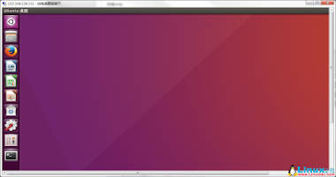
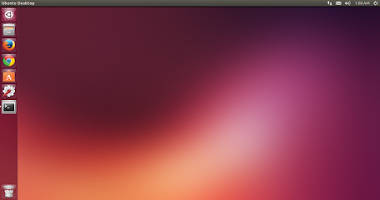
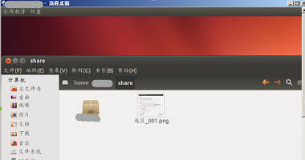
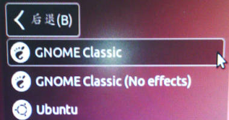
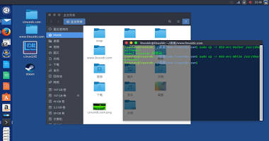

腾讯云学生服务器10元/月
广告
腾讯云

xrdp完美实现Windows远程访问Ubuntu 16.04_Linux教程
linuxidc.com
亿速云高防服务器低延迟免备案
广告
亿速云

Ubuntu放弃Unity，极大打击Linux必胜信心
linuxidc.com
Xrdp - 通过Windows的RDP连接Linux远程桌面（Ubuntu/CentOS/Re...
linuxidc.com
排名前8的最佳Ubuntu主题
linuxidc.com

Windows远程桌面访问Ubuntu 12.04 之安装XRDP
linuxidc.com

Windows远程桌面访问Ubuntu 12.04 之安装VNC
linuxidc.com
使用xrdp实现Windows 远程桌面Ubuntu Linux
linuxidc.com

GTK3主题：OSX-Arc_Linux主题
linuxidc.com